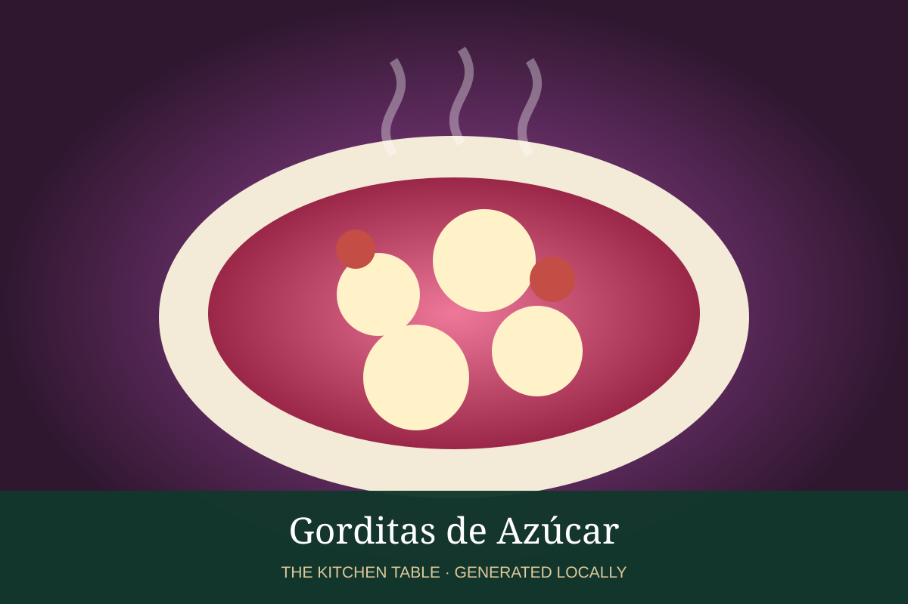

MEXICAN · DESSERTS & DRINKS
Gorditas de Azúcar
Soft griddled Mexican sweet cakes flavored with cinnamon and vanilla.

Ingredients
- 3 cups flour
- 1/2 cup sugar
- 2 tsp baking powder
- 1/2 tsp cinnamon
- Pinch salt
- 6 tbsp butter
- 1 egg
- 3/4 cup milk
- 1 tsp vanilla
Method
- Mix flour, sugar, baking powder, cinnamon, and salt.
- Work in butter, then add egg, milk, and vanilla to make a soft dough.
- Roll thick and cut rounds.
- Cook on a lightly greased griddle over medium-low heat until browned and cooked through.